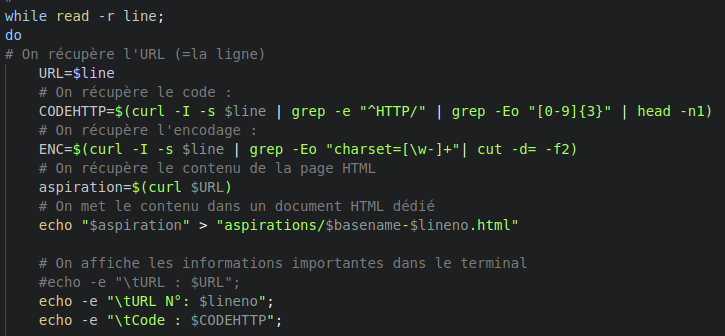
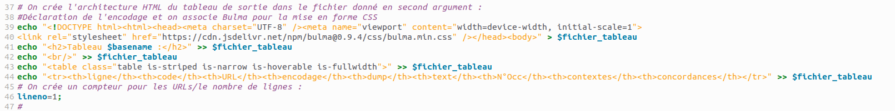

- scriptaspi.sh : le script qui permet de créer les aspirations des pages qui nous intéressaient. Lors de l'éxécution de ce script, un autre script est exécuté en parallèle :
- concordance.sh qui permet de créer les concordances du motif recherché lors de l'éxécution du script.
- itrameurscript.sh qui permet de créer, à partir d'un dossier de fichiers texte, un document XML qui concatène et organise chaque fichier.
Scripts
L'avancée du script

Comment avons nous fait ?
Nous avons réalisé 3 scripts différents pour la constitution et l'analyse de nos corpus. C'est scripts ont été réalisés durant les séances de cours et au fil de nos exercices personnels.
Les 3 scripts que nous avons rédigés sont :
Ici, nous allons nous intéresser à la rédaction des deux premiers scripts. La création du script itrameurscript.sh est explicitée dans la partie iTrameur.
Étape 1 :
09 novembre 2022
Notre but premier a été de réaliser un script permettant de traiter nos URLs et d'obtenir des données sur celles-ci. Suite à ça nous avons voulu les représenter sous la forme d'un tableau html
Pour ce faire nous avons utilisé des commandes bash vu en cours.
Tout d'abord nous avons téléchargé le script traitement_url_base.sh puis nous avons installé et utilisé curl afin de completer ce script.
Curl nous a permis de récuperer l'entête de la reponse du serveur et donc de savoir si l'url etait valide ou non ! si c'est 200 c'est ok sinon non :c
Etape 2
Après avoir verifié nos URLs nous voulons les stocker dans un tableau html

Etape 3
Nous avons ensuite voulu recuperer l'encodage de la page, nous voulons de l'UTF 8 ( expliquer pk )
Une fois l'encodage prelevé nous l'avons rajouté à notre tableau
inserer la ligne ou la capture commentée de ce passe là
Evidemment si ce n'est pas de l utf8 nous le convertissons avec iconv ( idem inserer l image avec le commentaire )
Etape 3
Nous avons ensuite utilisé Lynx qui nous permet de recuperer le contenu textuel d'une page
image avec le commentaire et la ligneEtape 4
Après nous avons compté le nombre d'occurence de notre mot
Inserer image
Etape 5
Nous avons ensuite rendu notre script universel pour que chacunes d'entre nous puisse le lancer sur son fichier URL
Etape 6
22 Novembre
Construction des dossiers necessaire au fonctionnement du script
Image avec dossier Aspirations contexte etc...
aspiration des pages et dump textuel
compter l'occurence de notre mot ajout de la regex image blabla
ajout du contexte
Script Concordances